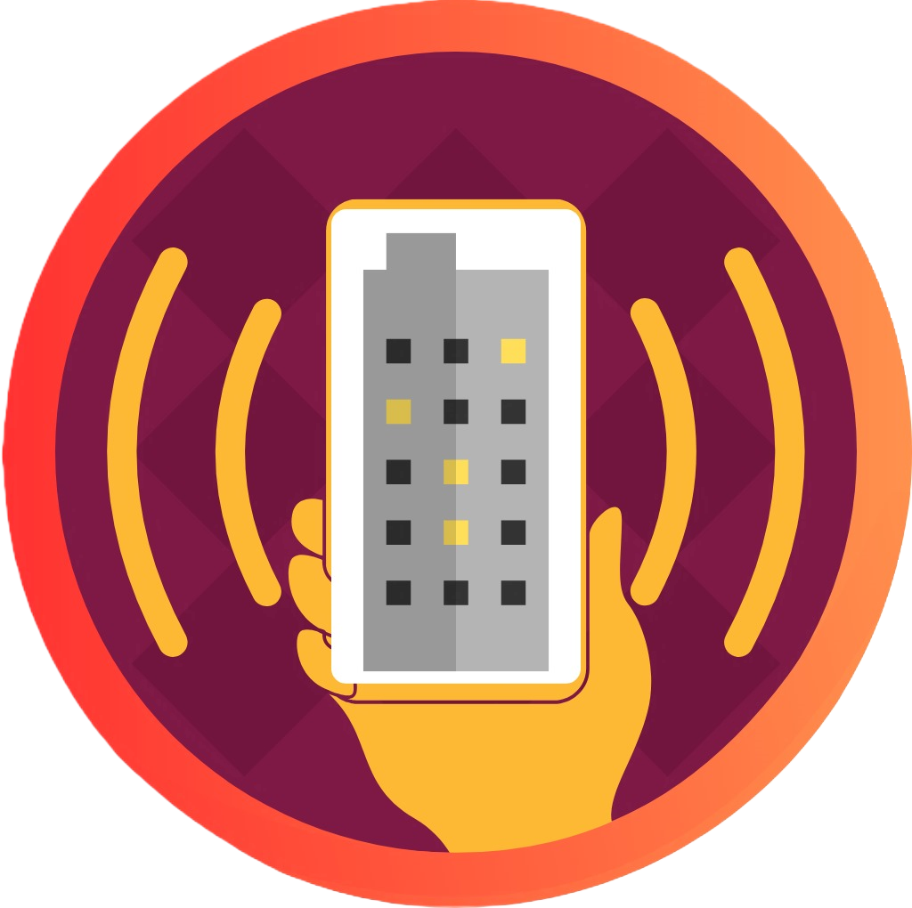

<ion-toolbar color="tertiary">
  <ion-title><h2>Visualizador Kinético</h2></ion-title>
</ion-toolbar>

<ion-content [fullscreen]="true">
  <div class="login">

    <h1>Ingrese sus datos a continuación</h1>
  
    <form class="needs-validation" [formGroup]="formLog">
      
      <ion-input shape="round" fill="outline" label="Correo" type="email" labelPlacement="floating" formControlName="email"></ion-input>
      <ion-input shape="round" fill="outline" label="Clave" type="password" labelPlacement="floating" formControlName="password"></ion-input>
      <ion-button  expand="full" shape="round" (click)="this.iniciarSesion()">Iniciar Sesión</ion-button>
    </form>
    
    <div *ngIf="this.cargaFin === true; then mostrar else esperar"></div>

    <ng-template #mostrar>

      <ion-select label="Acceso rápido" shape="round" fill="outline" interface="action-sheet" labelPlacement="floating" (ionChange)="onQuickUser($event)">
        <ion-select-option *ngFor="let item of arrayTestUsers" [value]="item">{{item.perfil}}</ion-select-option>
      </ion-select>
    </ng-template>
    <ng-template #esperar>

      <ion-select label="Cargando" shape="round" fill="outline" labelPlacement="floating"></ion-select>
    </ng-template>

    
  </div>
</ion-content>